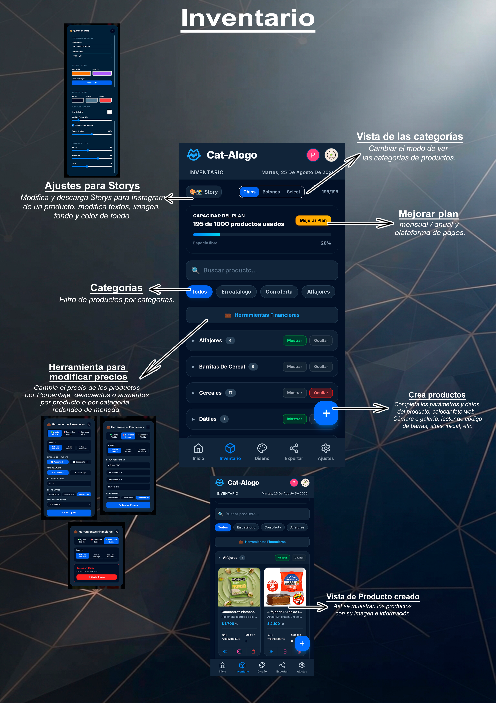
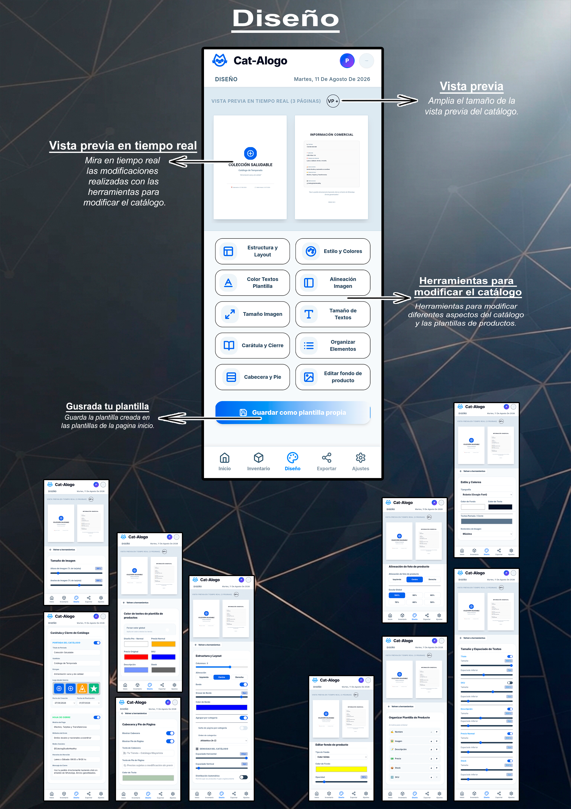
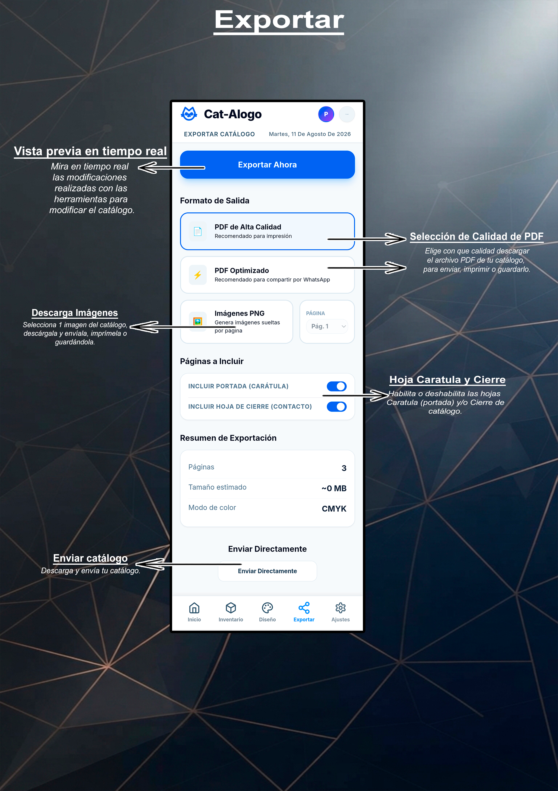
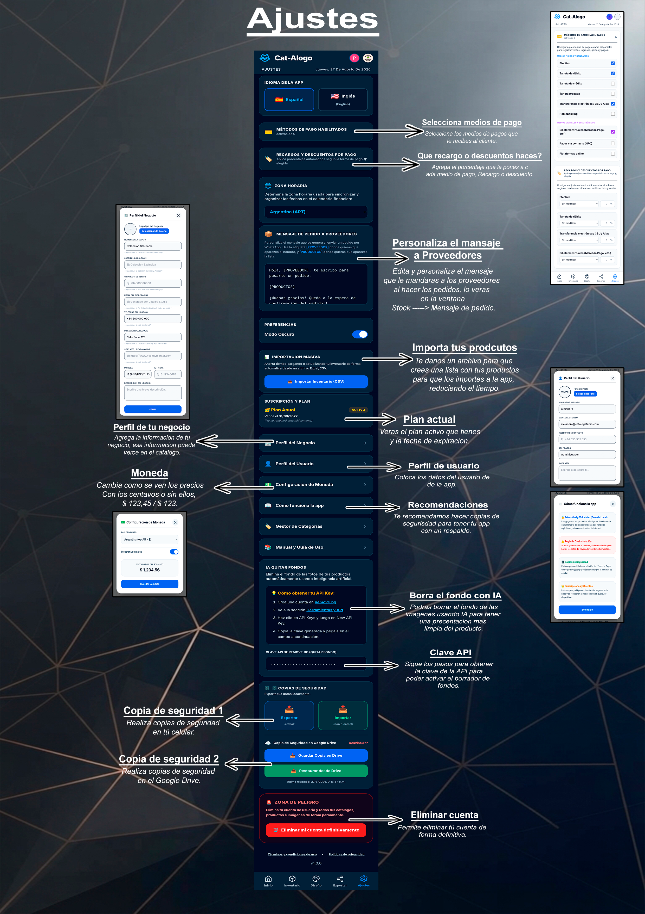
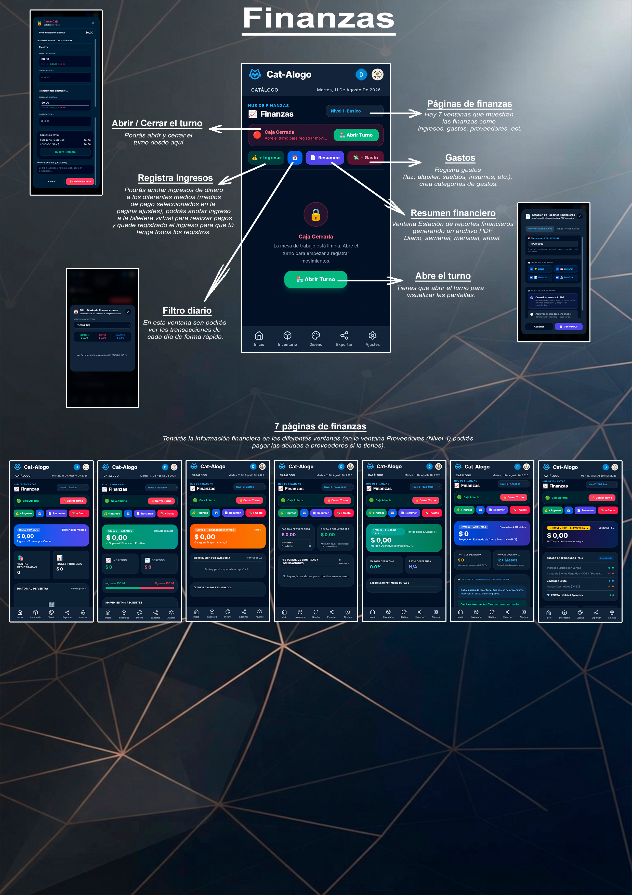

Bóveda Local Inteligente
Cat-Alogo funciona como ERP y POS móvil. Todos tus datos quedan seguros en tu teléfono, funcionando a máxima velocidad sin necesidad de internet.
MÓDULOS DE LA APLICACIÓN
- 1. Barra Superior: Accede a tu perfil y configuraciones de usuario de forma rápida.
- 2. Contadores de Productos: Visualiza al instante cuántos productos tienes cargados en total y cuántos están visibles en tu catálogo.
- 3. Abrir / Cerrar Turno: Abre la caja registradora indicando el dinero en efectivo (fondo inicial) con el que comienzas tu jornada.
- 4. Terminal de Ventas / Pedidos: Selecciona productos, ajusta cantidades, registra la venta con hasta 2 medios de pago y genera un ticket en PDF.
- 5. Venta Visual (Catálogo): Realiza una venta de forma visual selecionando los productos desde el catálogo de productos.
- 6. Hub de Finanzas: Accede al panel analítico con la información de tus ventas, gastos operativos y pagos a proveedores.
- 7. Registrar Gastos: Asienta de forma inmediata las salidas de dinero o gastos realizados en el día.
- 8. Actualización Masiva: Calcula márgenes de ganancia y actualiza el costo de tus productos por lote.
- 9. Mis Catálogos: Guarda tus selecciones de productos y diseños favoritos para volver a generarlos sin empezar desde cero.
- 10. Tasa Dólar: Registra la cotización actual para que los precios de tus productos en moneda extranjera se actualicen automáticamente.
- 11. Reporte de Stock Rápido: Modifica umbrales de alerta y actualiza las cantidades de tu inventario ágilmente.
- 12. Control de Stock Completo: Accede a la suite logística para administrar proveedores, reabastecer productos y generar órdenes de compra.
- 13. Escanear Producto (Informativo): Abre la cámara para leer el código de barras de un artículo y ver su ficha técnica al instante.
- 14. Escáner de Productos (Ventas): Toma el código de barras de un producto físico y súmalo directamente al carrito del cliente.
- 15. Selección de Plantilla: Selecciona y previsualiza el diseño que utilizarás para crear el PDF de tus productos.
Video Informativo de la Página Inicio
Pasos para realizar una venta:

- 1. Crea Productos (+): Completa los datos de tu artículo: nombres, precios, captura la foto (cámara, galería o web), escanea el código de barras y define tu stock inicial.
- 2. Categorías y Filtros: Filtra tu inventario al instante ("Todos", "En catálogo", "Con oferta") y personaliza la vista de estas categorías eligiendo entre diseño de Chips, Botones o Select.
- 3. Vista de Producto: Tarjetas inteligentes que te muestran la imagen y métricas del artículo, con accesos directos para mostrar/ocultar del catálogo público, editar o eliminar definitivamente.
- 4. Herramientas Financieras: Cambia los precios masivamente por porcentaje o monto fijo (aumentos o descuentos). Aplícalo a un producto o categoría entera e incluye reglas de redondeo automático.
- 5. Ajustes para Storys: Modifica y descarga imágenes verticales promocionales para Instagram. Personaliza el texto comercial, la imagen del producto, degradados y colores de fondo.
- 6. Borrador con IA: Elimina el fondo de las fotografías de tus productos automáticamente con un solo clic, dándoles un acabado de estudio.
- 7. Monitor de Plan: Visualiza la capacidad de tu inventario (productos cargados vs. límite permitido) y accede rápidamente a la plataforma de pagos para mejorar a un plan mensual o anual.
Aquí irá tu video demostrativo
Imagen de la página Inventario:

Imagen Crear nuevo producto:

- 1. Vista Previa en Tiempo Real (VP +): Monitor dividido que reproduce exactamente cómo quedará el documento final al exportarse[cite: 7]. El botón VP + expande la previsualización a pantalla completa.
- 2. Estructura y Layout: Define orientación de hoja, número de columnas de productos por página y márgenes.
- 3. Estilo y Color de Textos: Selección de tipografías (Google Fonts) y configuración cromática individual para títulos, descripciones, precios regulares y ofertas.
- 4. Alineación y Tamaño de Imagen: Controles deslizantes para ajustar el encuadre, la proporción y el tamaño máximo de las fotos.
- 5. Tamaño y Espaciado de Textos: Sliders de ajuste milimétrico para balancear la densidad de información y darles libertad de edición a tus descripciones.
- 6. Carátula, Cabecera y Cierre: Activación de logotipo superior y opciones para habilitar una página de portada comercial y una página de cierre con redes sociales, mapa y datos de contacto.
- 7. Organizar y Fondo de Producto: Reordenamiento de capas dentro de la tarjeta de producto (ej. ubicar el precio por encima de la descripción) y personalización de sombras, bordes redondeados y fondos.
- 8. Guardar como Plantilla: Almacena la configuración visual actual como una plantilla personalizada accesible desde el menú de Inicio.
Aquí irá tu video demostrativo
Imagen Módulo Diseño:

- 1. Formatos de Salida (PDF): Elige entre PDF de Alta Calidad con modo de color CMYK (ideal para imprenta o gráfica), o PDF Optimizado con compresión inteligente para enviarlo ultra rápido por WhatsApp o email.
- 2. Exportar Imágenes (PNG): Genera archivos de imagen individuales por cada página de tu catálogo, perfectos para subir como fotos a redes sociales o compartirlos en chats.
- 3. Páginas a Incluir: Utiliza los interruptores independientes para habilitar o deshabilitar la aparición de tu portada (carátula) y tu hoja de cierre (datos de contacto) en el archivo final.
- 4. Resumen de Exportación: Panel informativo que calcula y te muestra en vivo el total de páginas generadas, el perfil de color y el peso estimado en megabytes antes de realizar la descarga.
- 5. Enviar Directamente: Compila tu documento y abre automáticamente el menú nativo de tu teléfono para compartirlo en segundos por WhatsApp, correo, o guardarlo en tus archivos.
Aquí irá tu video demostrativo
Imagen Módulo Exportar:

- 1. Idioma de la app: Alterna la interfaz de la aplicación entre Español e Inglés según su preferencia.
- 2. Métodos de pago habilitados: Seleccione de una lista las alternativas de pago que aceptará y ofrecerá a sus clientes.
- 3. Recargos y descuentos: Configure reglas automáticas de precios. Agregue un porcentaje de recargo o de descuento que se aplicará sobre el total dependiendo del medio de pago que elija el cliente.
- 4. Mensaje a proveedores: Edite y personalice la plantilla base del mensaje de abastecimiento. Este es el texto que se generará automáticamente en el módulo de Stock al realizar un nuevo pedido.
- 5. Importación masiva: Optimice su tiempo de carga. El sistema le provee un archivo base para que liste todos sus productos de una vez y los importe masivamente a la aplicación.
- 6. Suscripción y plan: Visualice el estado de su plan activo, características habilitadas y la próxima fecha de expiración o renovación.
- 7. Perfil del negocio: Agregue y edite la información pública de su comercio. Estos datos serán visibles para sus clientes directamente en el catálogo.
- 8. Perfil de usuario: Administre los datos personales y credenciales del titular o administrador de la cuenta.
- 9. Configuración de moneda: Personalice el formato visual de sus precios, definiendo si desea mostrar los montos exactos con centavos o redondeados (ej. $123,45 o $123).
- 10. Recomendaciones: Sección con sugerencias y buenas prácticas operativas, como la creación de respaldos periódicos.
- 11. Borrador de fondos con IA: Herramienta de inteligencia artificial que recorta y elimina el fondo original de las imágenes de sus productos, logrando un catálogo con una presentación mucho más limpia y profesional.
- 12. Clave API: Panel con los pasos a seguir para obtener y vincular la llave de acceso (API Key) necesaria para activar la función del borrador de fondos.
- 13. Copias de seguridad: Proteja su información creando respaldos manuales. Puede exportar los datos directamente a la memoria de su celular (Copia 1) o sincronizarlos de forma segura en la nube mediante Google Drive (Copia 2).
- 14. Zona de peligro (Eliminar cuenta): Acción irreversible para borrar su cuenta y eliminar todos los datos asociados al sistema de forma definitiva.
Aquí irá tu video demostrativo
Página Ajustes:

- 1. Registrar Proveedores: Sección dedicada a la administración de sus contactos comerciales. Aquí podrá registrar y crear la lista completa de sus proveedores, el cual es el primer paso fundamental antes de realizar pedidos.
- 2. Asignar Productos: Una vez registrado un proveedor, en este apartado podrá seleccionar y vincular los productos específicos que dicho proveedor promociona. Esta configuración es esencial para automatizar la posterior creación de sus pedidos.
- 3. Lista de Productos: Visualice de forma organizada su catálogo. Esta sección le muestra la lista de categorías y productos creados, centralizando en tiempo real la información detallada del stock disponible para cada ítem.
- 4. Aviso de Stock Bajo (Umbral Crítico): El sistema cuenta con un indicador de alerta que le mostrará el número exacto de productos que han alcanzado un stock bajo o crítico. Al presionar el botón, la lista se filtrará automáticamente permitiéndole visualizar de inmediato qué productos requieren reposición.
- 5. Mensaje de Pedido: Agilice sus compras de reabastecimiento. Esta función le permite crear mensajes de pedidos estructurados de forma automática; listos para copiar y pegar en su aplicación de mensajería (como WhatsApp) y enviarlos directamente a su proveedor.
- 6. Recepción de Pedido: Lleve el seguimiento de las solicitudes enviadas. Al recibir la mercadería por parte del proveedor, esta sección le permite registrar el pago y confirmar la entrega del pedido, manteniendo su inventario siempre actualizado.
Aquí irá tu video demostrativo
Imagen Módulo Control de Stock:

- 1. Abrir / Cerrar el Turno: Inicia y finaliza tu jornada laboral realizando el arqueo de tu caja registradora de forma segura.
- 2. Registrar Ingresos y Gastos: Asienta ventas manuales combinando diferentes medios de pago, y registra salidas de dinero (luz, alquiler, insumos) creando tus propias categorías de gastos operativos.
- 3. Filtro Diario: Navega por un calendario integrado para visualizar, inspeccionar y administrar de forma rápida las transacciones exactas de cualquier día en específico.
- 4. Resumen Financiero (PDF): La estación de reportes compila toda tu actividad y genera documentos contables consolidados (diarios, semanales, mensuales o anuales) listos para descargar o imprimir.
- 5. Niveles 1, 2, 3 y 4 (Operación y Caja): Analiza tus ventas totales, el ticket promedio, el flujo de caja (ingresos vs. egresos), la distribución porcentual de tus gastos y administra las cuentas por pagar a tus proveedores.
- 6. Niveles 5, 6 y 7 (Rentabilidad y Proyección): Accede a métricas gerenciales avanzadas como tu ganancia neta real, el desglose de dinero por cada medio de pago, proyecciones de cierre de mes, cálculo de EBITDA y el estado de resultados (P&L).
Aquí irá tu video demostrativo
Imagen Módulo Finanzas:

PARA QUIÉN ES CAT-ALOGO?
Ropa y Calzado
Almacenes y Kioscos
Ferreterías
Mayoristas
Cosmética
Repuestos y Acc.
Dietéticas
Emprendedores